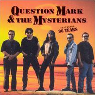

McGinn on mysterianism
Wed., Apr. 29
This online class session covers McGinn’s ‘mysterian’ position on the mind-body problem. McGinn argues that we will
never solve the mystery of consciousness and the brain, but that this is not because of any real mystery in nature, but only because of
the limitations of the human mind.
Key Concepts: Mysterianism, Cognitive Closure, Consciousness
Readings:
McGinn, “Can We Solve the Mind-Body Problem?” (Textbook ch. 38)
Class Materials:
Other Resources:
Stanford Encyclopedia of Philosophy
Internet Encyclopedia of Philosophy
Entries in reference works